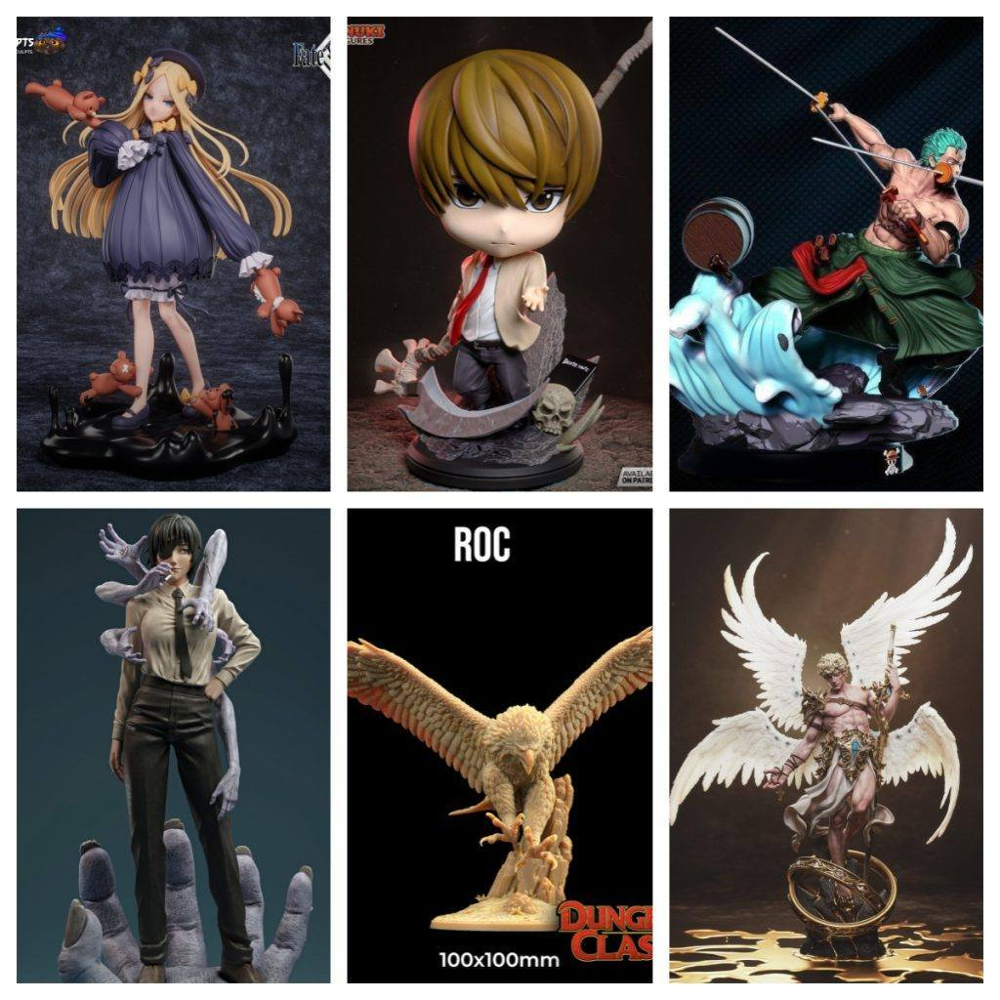

模型分享
2025年10月20日STl图纸文件分享

您好，模友们。本次的STL合集将带您穿梭于不同的幻想世界，从克苏鲁的呼唤到剑客的豪斩，从神秘神鸟到哲学机械，再到智斗巅峰与坚定誓言。这六位角色，每一位都承载着一段独特的宿命。
模型精选与导读：
- 1. 阿比盖尔·威廉姆斯 – 《Fate/Grand Order》
- 简介： 身为“外来之神”的巫女，阿比盖尔·威廉姆斯的模型完美融合了少女的纯真与邪神的诡谲。钥匙状的武器、精致的洛丽塔裙装，以及可能伴随的触手与异色瞳细节，共同塑造出这个既令人怜爱又潜藏恐惧的复杂角色。
- 2. 姬野 – 《链锯人》
- 简介： 早川秋的搭档，那位手持幽灵武器、烟不离手的酷帅前辈。这款模型无疑会定格她施展“幽灵恶魔”能力的瞬间，苍白的长发与决绝而略带哀伤的神情是其灵魂所在，充满了悲剧性的美感。
- 3. 神鸟
- 简介： 一款充满东方神话色彩的原创或经典生物。模型可能展现其展翅翱翔的优雅姿态，羽毛细节层层叠叠，姿态神圣而威严，仿佛是从《山海经》中飞出的祥瑞，适合作为桌面上的视觉中心。
- 4. 智天使
- 简介： 源自圣经体系的崇高存在。与常见的天使不同，智天使（Cherub）常被描绘为拥有复数翅膀和眼睛的奇异形态。此模型极尽复杂与神圣，交织的翼轮与凝视之眼，充满了神学象征与机械美感，是技术与艺术的打印挑战。
- 5. 夜神月 – 《死亡笔记》
- 简介： 这场智力游戏的绝对主角。模型或许会呈现他手持死亡笔记时的经典姿势，无论是掌控一切的邪魅一笑，还是与流克对峙的紧张瞬间，都能精准传达出这位“新世界的神”内心的复杂与癫狂。
- 6. 索隆 – 《海贼王》
- 简介： 未来的世界第一大剑豪！模型几乎必然展现他标志性的三刀流奥义姿态，无论是咬住和道一文字的悍勇，还是施展“三千世界”时的凌厉旋风，都将那份斩断一切的信念与力量感凝固于一刻。
打印与后处理指南：
- 极致细节： “智天使”的复数翅膀与“神鸟”的羽毛需要极低的层高与精准的支撑，建议耐心处理。
- 动态平衡： “索隆”的三刀流姿态对模型重心是考验，确保底座支撑牢固或调整打印角度。
- 神韵刻画： “夜神月”与“姬野”的成功更依赖于面部神情的涂装，建议使用极细笔刷精心勾勒眼神。
愿这次跨越众多传奇世界的邂逅，能点燃您创作的火焰。
Happy Printing & Painting！
链接: https://pan.baidu.com/s/1EojsESk0ftsV3uRQsp7r3Q?pwd=1r9y 提取码: 1r9y
以上内容仅供个人使用（非商用）
ONLY for PERSONAL (NON-COMMERCIAL) use.
加群获得更多免费模型！